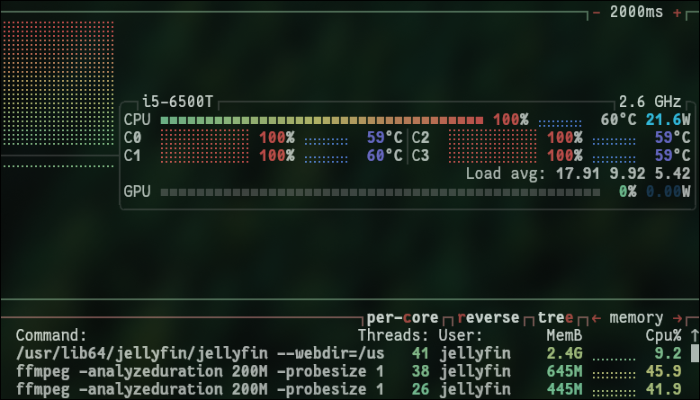

--- big changes to the server ---
17-04-26
potentially breaking changes for you
---------------------------------------------------------
As some of you may know, the main bottleneck with my server currently is my upload speed I get with my internet service provider.
I plan on moving the server to my aunts basement in edmonton where she has access to fiber optic.
What this means is many more users will be able to have access. Awesome. But the downside is that I will no longer be able to transcode for incompatible devices.
wtf is transcoding?
Transcoding means my server converts the files into one that your device (tv/xbox/etc), is able to read. It does this "on the fly" directly as you stream it. So far it's worked out fine/managable, but as you can see from image below. Having even just 3 people requiring transcoding at the same time eats up 100% of my cpu on all 4 cores lol.

Silver Lining
Non-Silver Lining... Coal Lining?
| xbox one series S: | Full compatibility (except for old anamorphic video, which i am converting slowly). Personally tested (what i use) |
| playstation 5: | i dont know, but im guessing same as xbox 1 s |
| chrome: | chromium 107 (when hardware is available) |
| firefox: | does not play mkv files or AC3 audio |
| edge: | requires hevc codec from microsoft store. then should work i think |
| safari | mkv with hevc = no good |
| android TV/amazon fire | yes; with android 5.0+ ; however early amazon fire may not, device dependant |
| swiftfin (iOS): | yes with iOS 14 and A8X chip or newer |
| roku: | hevc only supported on 4k devices |
| kodi with jellyfin plugin: | yes; full compatibility |
| jellyfin desktop client: | yes; full compatibility |
Asides from my xbox and google chrome, and an "amazon fire stick 4k select", I haven't tested the others.
So I'd say look up the specifications for your particular device, or if you would like. You can watch 2-3 minutes of the following files and ask me.
I will look in my servers log files wether it had to transcode for you or if they were compatible.
12 Monkeys [S01E01] - mkv. HEVC 8 bit SDR. AC3 - 6 ch.
3 Body Problem [S01E01] - mkv. HEVC 10 bit. EAC3 - 6 ch.
As a final note, there is a possibility where I can turn on server side transcoding again sometime in the future, but It may not be for a while if I ever do.
It would involve hardware acceleration and have a gpu do the work instead of my cpu but I'm not entirely sure how it works and I'm lowkey scared to try it. It would require me installing a completely different OS and a full server rebuild from backed up files. So realistically I think if I ever upgrade the host machine then I will start fresh with that route in mind, and get something with a dedicated gpu I can use.
As far as future upgrades go a new host system is near the bottom of my list, so needless to say, don't hold your breathe for transcodes to come back permanently.
Additionally, if I ever do decide to upgrade the movie files to be 4k resolution, then they will mosre than likely be in the same format and codecs of the tv shows (HEVC/EAC3) as it just makes way more sense from a technical viewpoint as well as it's already becoming the new standard.
If you end up wanting to watch something that is incompatible with your device, I'm open to temporarily allowing transcodes depending on current server load if its feasable.
Anyways thanks for reading, I know it was a bit wordy and I'm probably the only one interested in the juicy details but it seems relevant to everyone
-- Connor